Configurações de Produção - Aba Entrada de PA
Para acessar as Configurações de produção é necessário ir no menu:
Administração -> Definição -> Produção -> Configurações de produção
Na Aba Entrada de PA da tela de configurações de produção é realizado a configurações relacionadas ao Apontamento de entrada de PA.
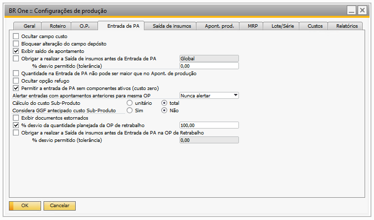{kind=link}
Ocultar campo custo
Quando esse parâmetro estiver desmarcado, o campo “Custo unitário” será exibido na tela.
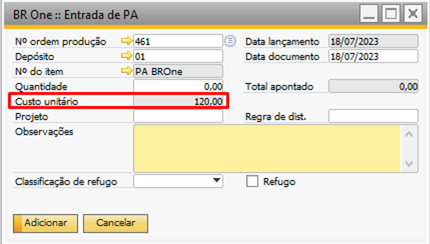{kind=link}
Caso o parâmetro esteja marcado, o campo “Custo unitário” não será exibido na tela.
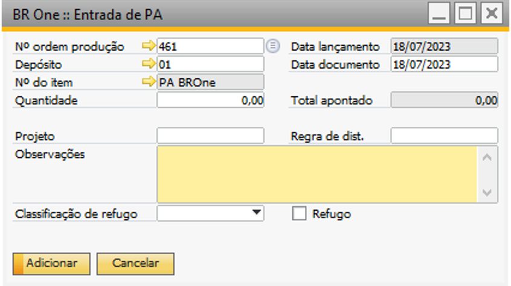{kind=link}
Bloquear alteração do campo depósito
Quando esse parâmetro estiver desmarcado, o campo “Depósito” poderá ter seu valor alterado.
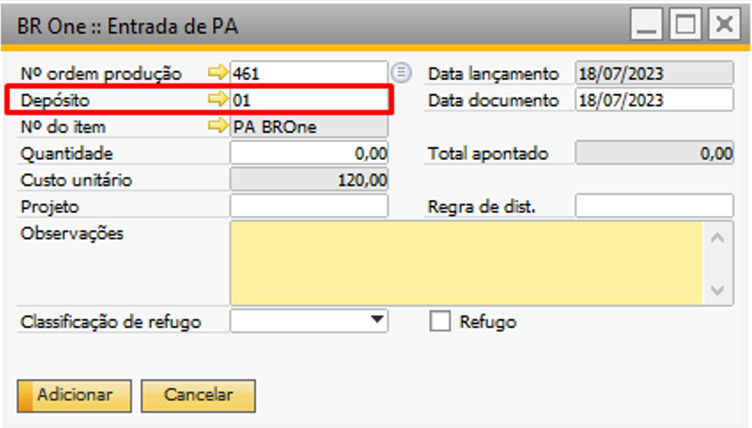{kind=link}
Caso o parâmetro esteja desmarcado, o campo “Depósito” estará bloqueado para alteração.
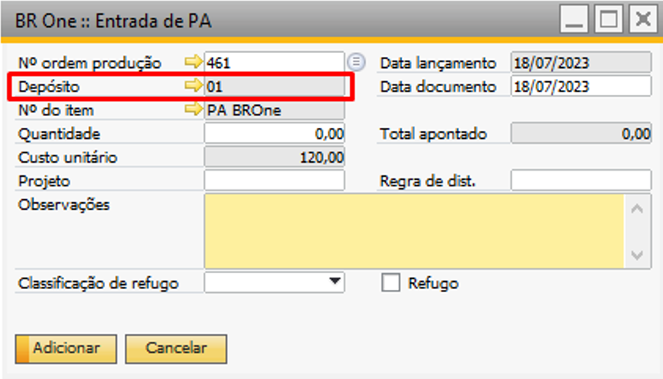{kind=link}
Exibir saldo de apontamento
Quando o parâmetro estiver desmarcado, o campo “Saldo restante” não será exibido na tela.
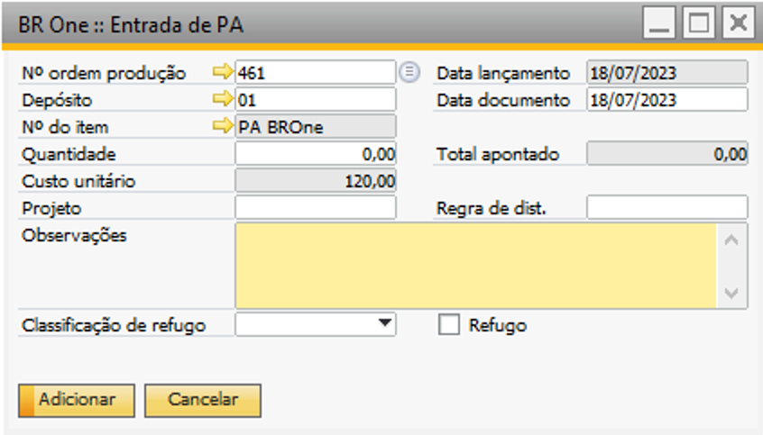{kind=link}
Caso o parâmetro esteja marcado, o campo “Saldo restante” será exibido na tela.
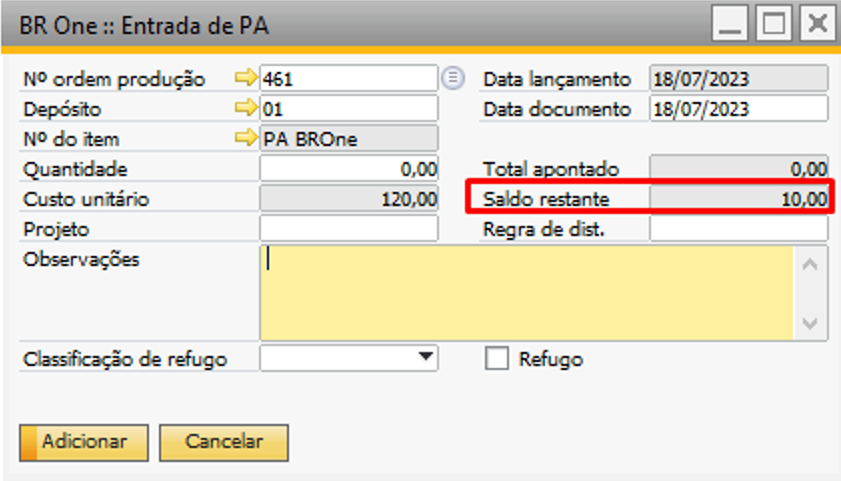{kind=link}
Obrigar a realizar a Saída de insumos antes da Entrada de PA - % desvio permitido (tolerância)
Quando esse parâmetro estiver desmarcado, poderão ser realizadas entradas de produtos acabados sem ter feito saída de insumos.
Quando esta opção estiver marcada e o campo “% desvio permitido (tolerância)” for igual a 0, não será possível realizar a entrada de produto acabado sem antes realizar a saída de insumos para os componentes da Ordem de produção (OP). Caso o usuário tente realizar uma entrada de PA com um valor maior que a tolerância referente à saída de insumos, a seguinte mensagem será exibida:
{kind=link}
BR One :: Não foi realizado a saída de insumos (dentro do % de tolerância definido) para os itens desta OP.
Para poder realizar a entrada de PA, será preciso antes realizar a saída de insumos para os itens cujo método de baixa é “Manual”.
A entrada de PA a ser feita após a saída de insumos tem que ser proporcional à saída realizada. Se a saída de insumos não for a total, então a Entrada de PA também não poderá ser a total.
Exemplo:
Na Ordem de produção (OP) nº 469, temos quantidade planejada do item PA BROne de 100 unidades e para os componentes COMP003 e COMP004 é de 1.000 para cada.
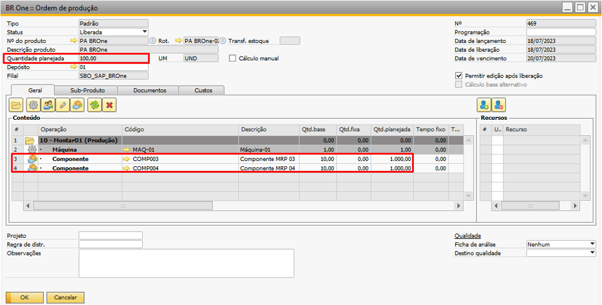{kind=link}
Será realizada a saída de insumos de apenas 100 unidades de cada componente.
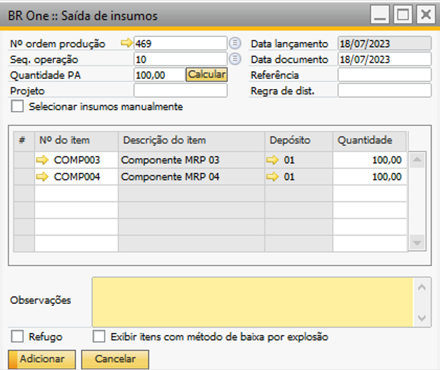{kind=link}
Então, o máximo de entrada de PA que poderá ser feito é 10, pois para cada 1 unidade do item PA BROne, serão necessárias 10 unidades dos componentes COMP003 e COMP004. Como foi saído 100 de cada componente, então há disponibilidade de 10 unidades para realizar a entrada de PA. Se tivesse sido feita a saída de insumos de 500 unidades para cada componente, poderia ser realizada a entrada para até 50 unidades.
Se o campo % desvio permitido (tolerância) for maior que 0, poderá ser realizada uma entrada maior que a equivalente à saída, considerando o valor da porcentagem de desvio.
Exemplo:
Para Ordem de produção (OP) nº 469, a quantidade planejada é 100 do item PA BROne e foi realizado a saída de insumos dos componentes COMP003 e COMP004 de 100 unidades cada. E o valor no campo % desvio permitido (tolerância) for maior que 0, no nosso exemplo vamos usar o valor 10, então. O máximo de entrada que pode ser feito é 11 unidade. Caso usuário tente inserir um valor maior que 11 unidade, a seguinte mensagem de erro será exibida:
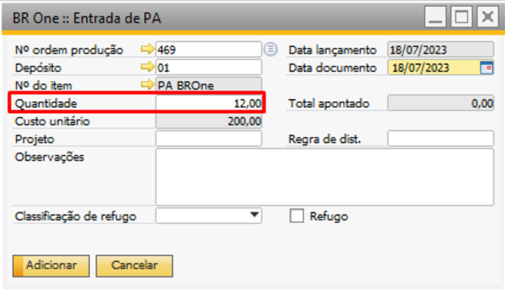{kind=link}
{kind=link}
BR One :: Não foi realizado a saída de insumos (dentro do % de tolerância definido) para os itens desta OP.
Quantidade na Entrada de PA não pode ser maior que no Apont. de produção
Quando esse parâmetro estiver desmarcado, será possível realizar entradas de PA sem considerar a quantidade apontada na tela “BR One :: Apontamento de produção”.
Caso o parâmetro esteja marcado, não será permitido realizar entradas de PA em quantidade maior que foi apontada na tela “BR One :: Apontamento de produção”.
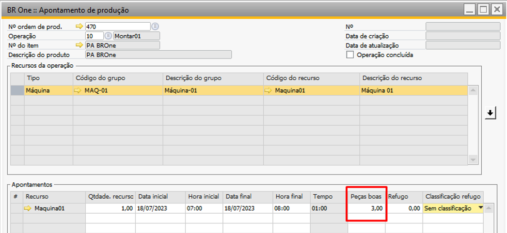{kind=link}
{kind=link}
A seguinte mensagem será exibida:
{kind=link}
BR One :: Foi apontado a produção de x peça(s). Insira uma quantidade menor ou igual a este valor.
Ocultar opção refugo
Com esse parâmetro marcado, o campo “Refugo” da entrada de PA será oculto.
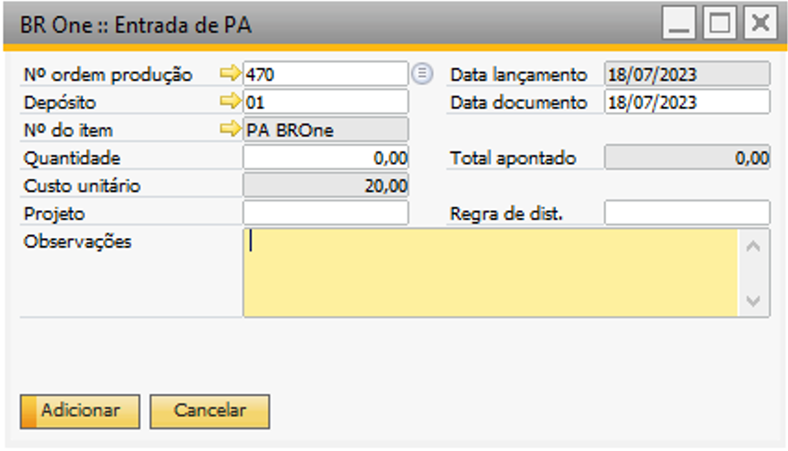{kind=link}
Permitir entrada de PA sem componentes ativos (Custo zero)
Os Ativos Fixos no SAP são ativos tangíveis e intangíveis que podem ser identificados como ativos individuais na data fixada de encerramento. Você pode controlar todo o ciclo de vida de seus ativos fixos, da aquisição até a baixa. Os processos relevantes, como suprimento, venda ou depreciação, são amplamente automáticos e integrados com outros centros de trabalho.
Você pode exibir, criar e alterar ativos fixos, assim como, sob determinadas condições, excluí-los. Você pode ver como os valores de seus ativos fixos surgiram e visualizar os lançamentos contábeis relacionados.
Se a sua solução foi configurada corretamente, ativos fixos são criados automaticamente no processo integrado de suprimento e faturamento baseado em materiais únicos, aos quais custos de aquisição e produção são lançados.
Alertar entradas com apontamentos anteriores para mesma OP
Esse parâmetro possui três opções:
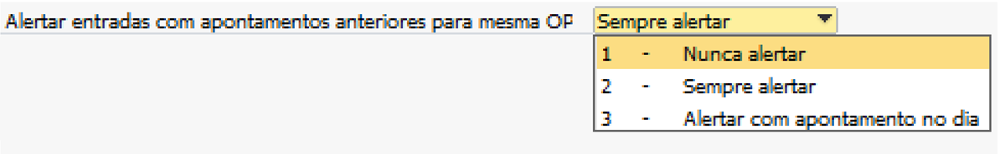{kind=link}
Nunca alertar (padrão);
Sempre alertar;
Alertar com apontamento no dia.
Na opção “Nunca alertar”, as Entradas de PA serão realizadas e não haverá validação referente a quantidade de Entradas que já foram realizadas para aquela Ordem de produção (OP).
Com a opção “Sempre alertar” selecionada, todas as Entradas de PA que forem inseridas serão validadas se a Ordem de produção (OP) não possuir uma entrada realizada anteriormente. Caso possua alguma entrada realizada anteriormente, a seguinte mensagem será exibida:
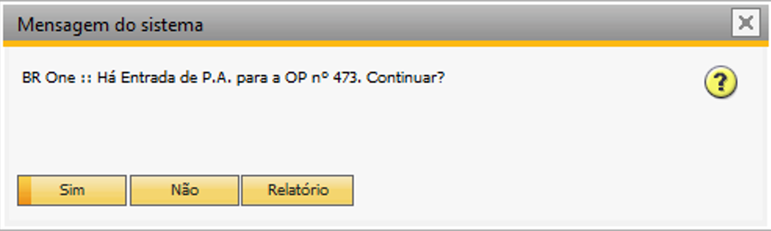{kind=link}
BR One :: Há Entrada de P.A para a OP nº x. Continuar?
Caso clique no botão “Sim”, a Entrada de PA será inserida normalmente. Se a opção escolhida for “Não”, o processo será cancelado e a Entrada de PA não será inserida. Caso a opção “Relatório” é que seja escolhida, o processo também será cancelado e um relatório com as Entradas realizadas anteriormente será exibido:
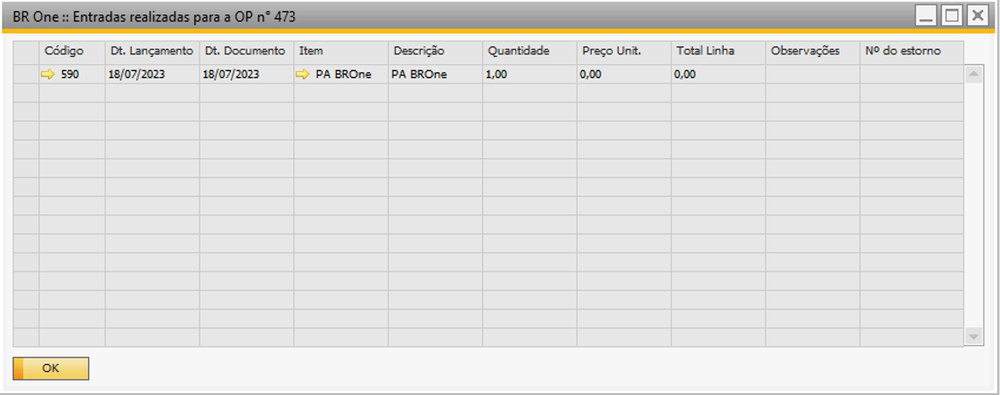{kind=link}
Com a opção “Alertar com apontamento no dia” selecionada, o processo que irá ocorrer é semelhante ao detalhado acima, porém, será validado se foram realizadas Entradas de PA naquele dia, ou seja, entradas que possivelmente possam ter sido inseridas em outros dias serão desconsideradas.
Cálculo do custo Subproduto
Este parâmetro é utilizado para calcular os subprodutos da Ordem de Produção, caso existam. Nele, há duas opções disponíveis para o cálculo:
Opção “Unitário”: nesse caso, o cálculo do subproduto é realizado com base no custo total dos componentes planejado. Por exemplo, se o custo total dos componentes planejado é de 25,00 e a quantidade planejada da Ordem de produção (OP) é 5 e o subproduto a 1%, o cálculo será:
Custo unitário Subproduto: (((Custo total dos componentes planejado) + (Custo total do recurso)) / (Quantidade total planejada do produto acabado)) * (Percentual de custo definido para o Subproduto)
Custo unitário Subproduto: (25,00 / 5) * 0,01
Custo unitário Subproduto: 5,00 * 0,01
Custo unitário: 0,05
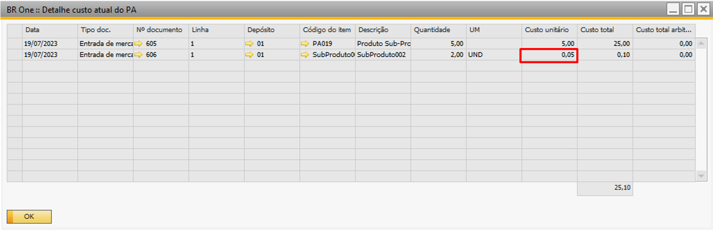{kind=link}
Opção “Total”: O cálculo do subproduto é realizado com base no custo unitário do produto principal (PA). Por exemplo, se o custo unitário do produto principal é de 4,95 sendo realizado a entrada do produto principal na quantidade de 5 unidades e o subproduto a 1%, o cálculo será:
Custo total Subproduto: Quantidade apontada do PA * (Soma do custo dos componentes por unidade de PA) * % Custo
Custo total Subproduto: 5 * 4,95 * 0,01
Custo total Subproduto: 0,24
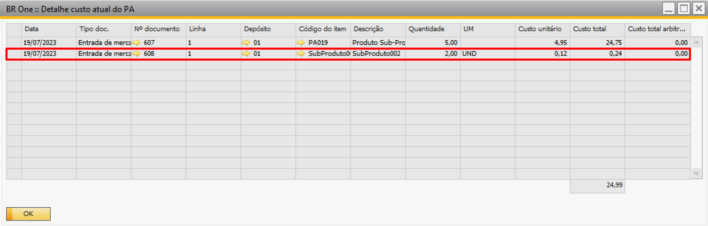{kind=link}
Para maiores detalhes desse parâmetro e o seu funcionamento na Ordem de produção, acesse o manual (Topico do manual Subproduto)
Considera GGF antecipado custo Subproduto
Quando selecionada essa opção para encontrar o custo do subproduto é levado em consideração o custo do GGF antecipado do PA, se a opção estiver desmarcada o custo do subproduto é baseado apenas no custo dos componentes.
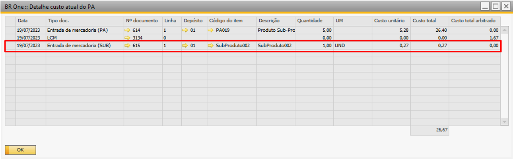{kind=link}
Exibir documentos estornados
Com o parâmetro desmarcado, as Ordens de Produção (OPs) que possuem documentos estornados não serão exibidas na tela “BR One :: Detalhe custo atual do PA”.
No entanto, ao marcar esse parâmetro, as Ordens de produção (OPs) que possuem documentos estornados serão exibidas na tela “BR One :: Detalhe custo atual do PA”.
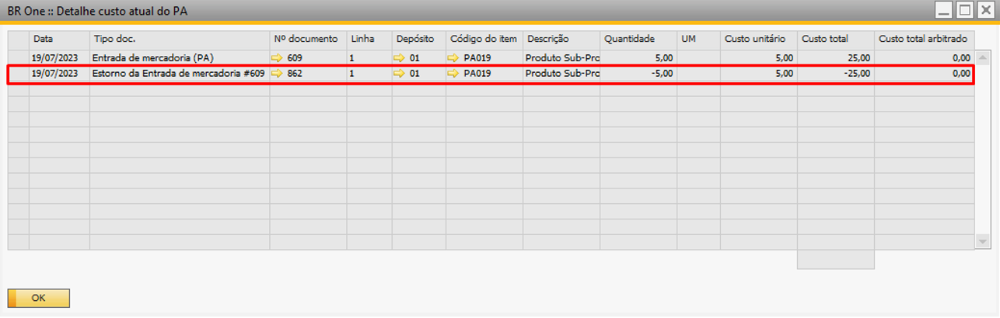{kind=link}
% desvio da quantidade planejada da OP de retrabalho
Com o parâmetro marcado, é possível configurar uma porcentagem de desvio para a entrada de PA nas OPs de Retrabalho.
Exemplo:
Em uma OP de Retrabalho que possui uma quantidade planejada de 10 peças, com o parâmetro marcado e configurado com um desvio de 50%, é possível realizar uma entrada de PA de até 15 peças, pois essa quantidade representa o desvio configurado no parâmetro.
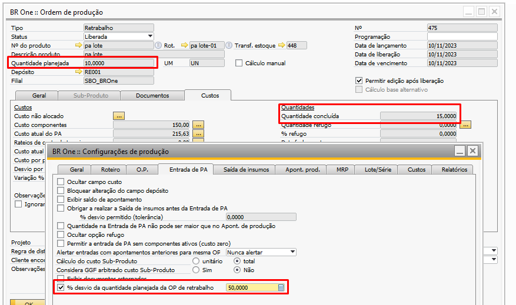{kind=link}
Caso usuário tente realizar uma entrada de PA com uma quantidade superior ao desvio configurado, o add-on irá retornar a seguinte mensagem de erro:
{kind=link}
BR One :: Quantidade apontada não pode ser superior que a quantidade planejada: x. Desvio permitido de x%. Total permitido: x. Total apontado: y.
Com o parâmetro desmarcado, o add-on não permitirá que seja feita a entrada de PA de peças sobressalentes para a OP de Retrabalho, onde irá retornar a seguinte mensagem de erro:
{kind=link}
BR One :: Não é permitido apontar uma quantidade de produto acabado maior que a quantidade planejada na OP de retrabalho.
Obrigar a realizar a Saída de insumos antes da Entrada de PA na OP de Retrabalho - % desvio permitido (tolerância)
Este parâmetro obriga a realização da saída de insumos dos componentes com baixa manual na OP de Retrabalho antes da realização da Entrada de PA, com ele é possível definir um desvio (% tolerância) para a quantidade utilizada na saída de insumos.
Quando esse parâmetro estiver desmarcado, poderão ser realizadas entradas de produtos acabados sem ter feito saída de insumos nas OPs de Retrabalho.
Quando esta opção estiver marcada e o campo “% desvio permitido (tolerância)” for igual a 0, não será possível realizar a entrada de produto acabado sem antes realizar a saída de insumos para os componentes da Ordem de produção de Retrabalho (OP).
Caso o usuário tente realizar uma entrada de PA com um valor maior que a tolerância referente à saída de insumos, a seguinte mensagem será exibida:
{kind=link}
BR One :: Não foi realizado a saída de insumos (dentro do % de tolerância definido) para os itens desta OP.
Para poder realizar a entrada de PA, será preciso antes realizar a saída de insumos para os itens cujo método de baixa é “Manual”.
A entrada de PA a ser feita após a saída de insumos tem que ser proporcional à saída realizada. Se a saída de insumos não for a total, então a Entrada de PA também não poderá ser a total.
Exemplo:
Na OP de Retrabalho nº 4, temos uma quantidade planejada do item pa nenhum 01 de 10 unidades e para o componente item nenhum 01 é de 1 para cada PA.
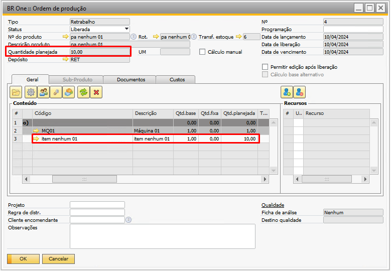{kind=link}
O parâmetro está marcado e o desvio configurado é de 20%:
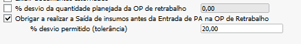{kind=link}
Será realizada a saída de insumos de apenas 1 peça para o componente.
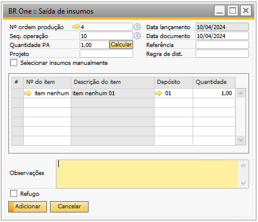{kind=link}
Então, o máximo de entrada de PA que poderá ser feito é de 1,20, o 1 referente a saída de insumos do componente item nenhum 01 e o 0,20 é referente ao desvio configurado no parâmetro.
Caso usuário tente realizar uma entrada de PA com qualquer valor superior a 1,20, o add-on irá validar e bloquear o processo, retornando a validação abaixo:
BR One :: Não foi realizado a saída de insumos (dentro do % de tolerância definido) para os itens desta OP.
Caso usuário deseje realizar mais entradas de PA na OP, deverá então realizar as saídas de insumos para os componentes da mesma.